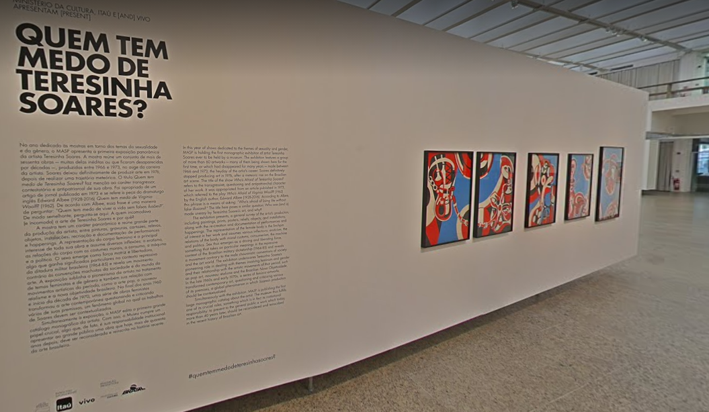
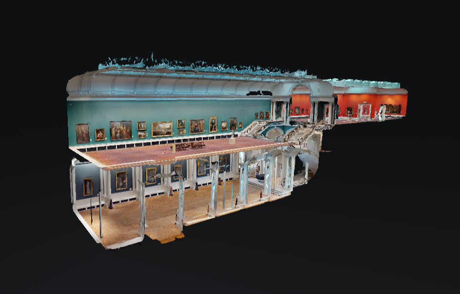
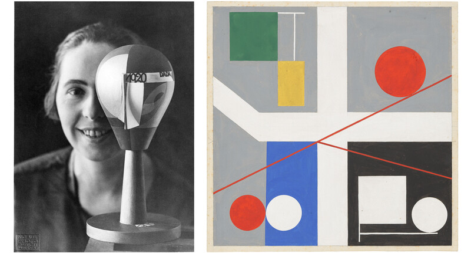
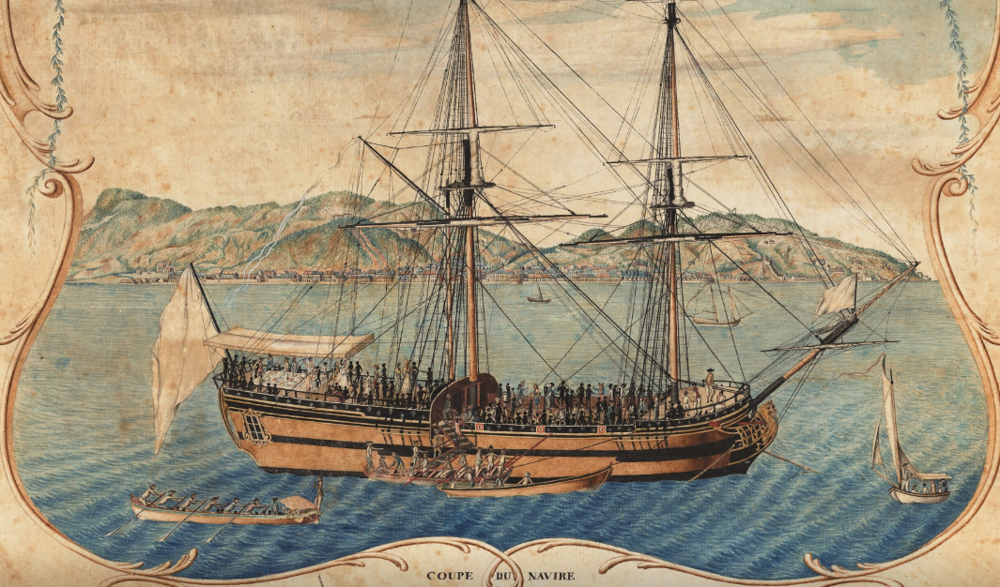
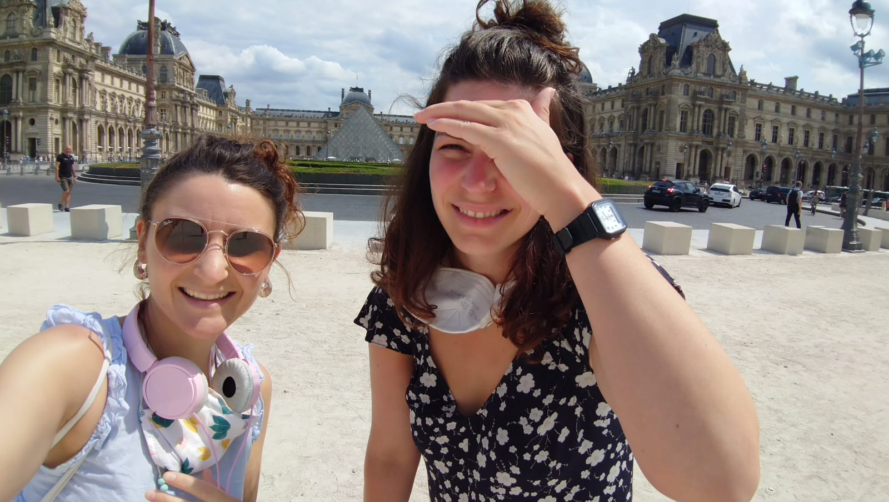

Huit petits passe-temps pansements
Musée des Beaux Arts de Montréal

Le Musée des Beaux Arts de Montréal présente cinq de leurs expos en ligne. Dommage qu'on n'entende pas l'accent en lisant les textes de l'expo.
J'ai déjà rempli le formulaire pour t'éviter de donner ton adresse mail si tu veux: solenn-solenn@protonmail.com (mon adresse pour les spams :)
Montrrréal calice!Museu de Arte de São Paulo Assis Chateaubriand
Who's afraid of Teresinha Soares?
Cette première rétrospective est unique car elle présente 40 œuvres de l’artiste brésilienne Teresinha Soares, une pionnière dans la thématique de l'identité de genre féminin qui a créé peintures, dessins, gravures, boîtes-objets, reliefs et installations entre 1965 et 1976.
Personnalité puissante et émancipée, écrivaine et défenseuse des droits des femmes, Teresinha Soares complète sa biographie en étant la première femme jamais élue au conseil municipal de sa ville natale, ainsi qu'une gagnante de concours de beauté, une fonctionnaire et une professeure.
Muse ô museLa Monnaie de Paris

Évade-toi dans l'univers syncrétique de Kiki Smith!
Kiki Smith est une artiste américaine contemporaine dont l'œuvre figurative explore une série de thèmes liés à la condition humaine : spiritualité, mortalité, féminité et sexualité. Elle est fascinée par l'anatomie du corps humain et la régénération. "Je crois toujours que toute l'histoire du monde se trouve dans notre corps", a dit un jour Smith.
Miss! Miss Kiki Smith!Ciudad Perdida 360
La "cité perdue" est située au fin fond de la jungle des montagnes de la Sierra Nevada de Santa Marta, en Colombie. Pour s'y rendre, il faut soit un coûteux vol en hélicoptère, soit un trek de deux jours dans la jungle. Mais tu n'as pas besoin de faire tout ce chemin pour la voir, grâce à cette vidéo à 360 degrés du Global Heritage Fund.
Tu peux cliquer directement dans la vidéo pour naviguer! Je ne connaissais pas.
Monsieur Indiana Jones, par ici!National Museum of Modern and Contemporary Art de Séoul

Voici une petite balade virtuelle dans un musée à l'autre boût du monde.
À vos marques, prête, cliquez!
Moderne et contemkoréenNational Gallery of Ireland
Ce lien te fait rentrer dans la Grande Galerie du musée comme dans une maison de poupée.
La Grande Galerie est consacrée à l'époque des Lumières et comprend des œuvres d'artistes britanniques, irlandais, français, italiens, espagnols, néerlandais et suisses. Chaque œuvre d'art de la Grande Galerie a un lien avec l'Irlande, que ce soit par l'artiste, le sujet, le modèle ou l'ancien propriétaire.
Ma'am, over here Ma'am!MoMA The Museum of Modern Art
Sophie Taeuber-Arp, pionnière de l'art abstrait des années 1910 à 1930
L'artiste suisse Sophie Taeuber-Arp était une figure clé de l'avant-garde et du dadaïsme. Nombre de ses œuvres présentent des formes et des motifs géométriques. Avec ses créations textiles, elle abolit les frontières entre art appliqué et art libre. Ses créations ont notamment inspiré des stylistes de renom.
Mama? Non, Dada!Le Château des Ducs de Bretagne
Nantes et la traite atlantique
Du 17e au 19e siècle, la traite atlantique occupe une place déterminante dans le commerce nantais et contribue à enrichir la ville. Le musée d’histoire de Nantes la présente dans son parcours permanent. Quel rôle Nantes a joué dans l’Europe négrière, comment s’organise une campagne de traite, qui sont les armateurs et négociants à l’origine de ce commerce, comment se déroulent la vente des esclaves et leur vie dans les plantations ?
Meuh non, nous on y est pour rien!Joyeux anniversaire Marine!
Sans tansition
J'espère que tu passes une superbe journée et que tu profites des quelques brins de liberté en cette journée de Mars. En Mars, fais ce qu'il te plaît, ah non, mince! Le jour de ton anniversaire, fais ce qui t'est cher! On improvise, plein de bises! Solenn
Deiz ha bloaz laouen !!